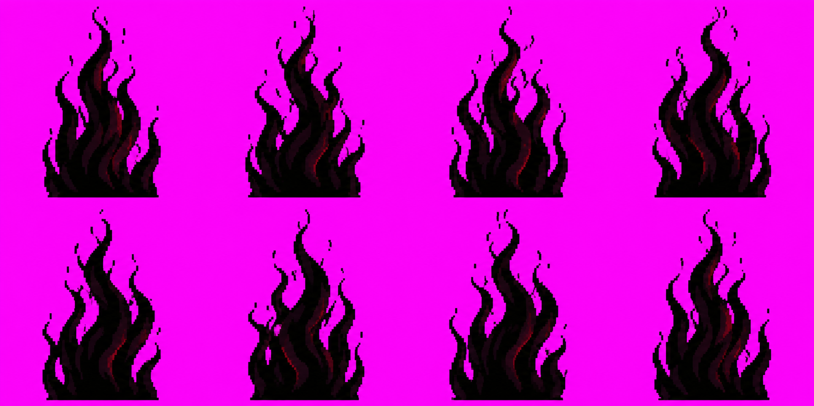
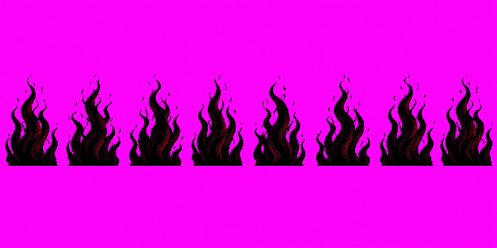
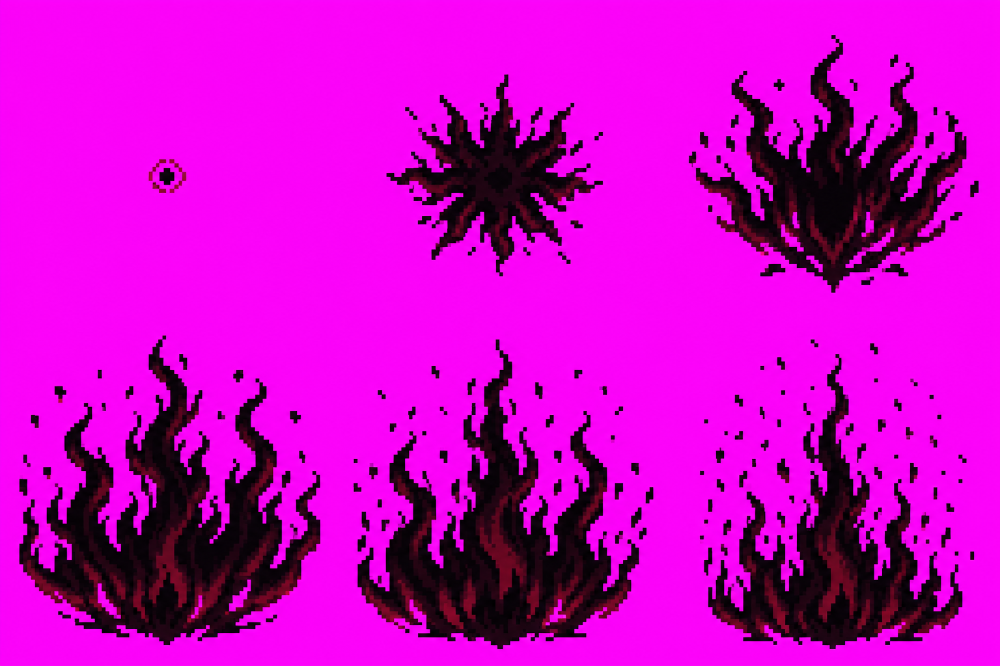
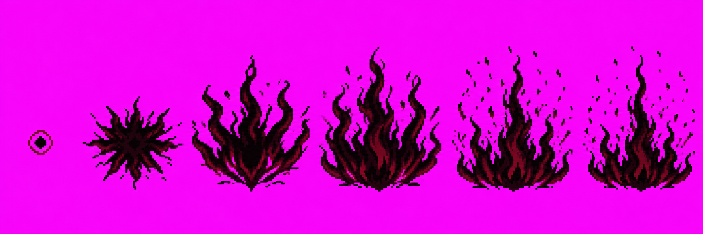
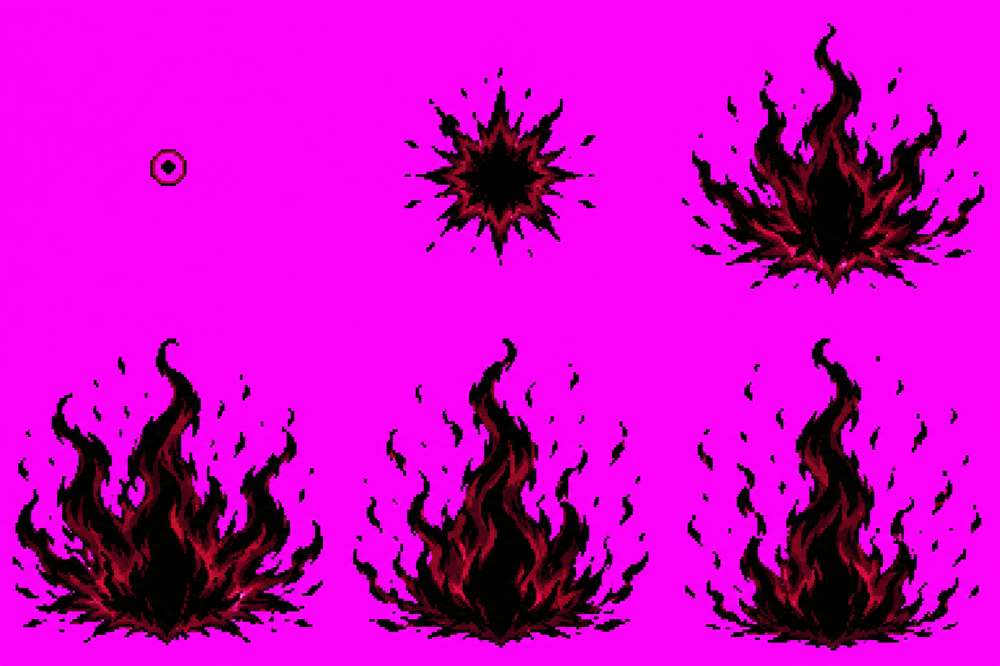

Sasuke skills · batch 2 Amaterasu
These are preserved generation attempts for A6 amaterasu and A7 amaterasuIgnite. None is an approval candidate. Each image used its full three-call budget; no new image calls remain under the current budget.
Why held: the selected v01 outputs are 4×2 / 3×2 grids with non-square cell canvases; the final correction-call v02 outputs still do not match the required 8:1 / 6:1 one-row layout. All have near-magenta rather than exact #FF00FF backgrounds and tens of thousands of RGB values rather than the restricted palette. They are quarantined under art/vfx/raw/_qa_hold/, with no manifest entries, so the packer will not select them.
A6 · Amaterasu, loop
v01 · attempt 2 HOLD

1774×887, 4×2. Shape reads as a black flame mass with open gaps; canvas/layout, background and palette fail the source contract.
v02 · attempt 3 HOLD

1774×887, one band, still 2:1 rather than 8:1; sampled corner RGB(243,15,243); 42,870 colors. No more calls available.
A7 · Amaterasu ignition
v01 · attempt 2 HOLD

1536×1024, 3×2. The ignition point, outward burst and upward flames read; layout, background and palette fail.
v02 · attempt 3 HOLD

2172×724, one band, still 3:1 rather than 6:1; sampled corner RGB(230,14,236); 69,098 colors. No more calls available.
v01 · attempt 1 HOLD

Nonselected alternative retained for provenance; also grid layout. No approval requested.
The complete prompts, output IDs, hashes, call counts and technical findings are in art/characters/sasuke/production/skills-revamp-batch2/PROVENANCE.md.